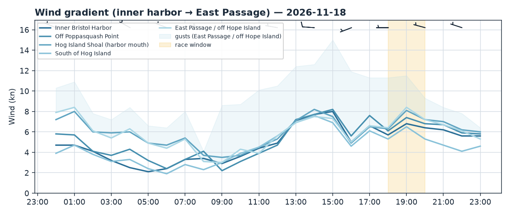

Bristol Harbor · Rhode Island
Wed 18 Nov 2026 · 18:00–20:00
Light W/WNW breeze (6–7 kt, models likely over-blowing), fading SSW ebb slackening at the mouth near 19:40 — but a 0.56 ft low at 20:08 bites the shallow edges.
Wind
A light westerly to WNW evening breeze, forecast 270–290° and veering a touch (8–15°) through the window. Race-window averages sit 6–7 kt with gusts to ~12, and the three models are tightly clustered (spread ≲1.6 kt everywhere), so treat the direction confidently. The strength, however, gets a caveat: wind_check has the live anemometers running ~0.73× the model (obs mean 4.2 vs 5.7 kt) — the model is probably over-blowing, so plan for the lighter end (4–6 kt) and reward anyone who finds pressure.
Fix gradient points seaward: the harbor mouth (Hog Island Shoal, 7.2 kt) and the East Passage (7.3 kt) carry the most breeze, inner harbor sits around 6.3 kt, and the pocket south of Hog Island is softest (5.7 kt). The live picture is a little more southerly and veering around than the W forecast — Newport reads ~6 kt from the SSW (210°), Conimicut ~7.8 kt SW (232°) and backing — so don't be surprised if the evening breeze is softer and shiftier than a clean W gradient.
On a W wind, Poppasquash Neck casts a lee to its E/SE — expect a soft patch along the harbor's west side and the breeze veering toward the S/E as you clear the shadow. Stay out of that hole and lean toward the harbor-mouth pressure when the course lets you.
Current
Ebb dominates most of the window, setting SSW/down-bay (seaward), then slackens late:
- Harbor mouth (Hog Island NW, ACT2171): ebbing ~199° (SSW) at a modest ~0.3 kt, going slack at 19:38 and turning to weak flood after — so the back half of the race sees near-slack water at the mouth.
- East Passage (Dyer Island W, ACT2156): the stronger flow — ebb ~216° (SSW) at ~0.9 kt, not reaching slack until 20:50, i.e. running the whole window. This is the channel-axis current that actually matters on the seaward legs.
Net: a SSW seaward set that helps anything heading S/down-bay and hurts legs pushing N/up-bay — strongest in the Passage channel, weak-to-slack inside the harbor and fading at the mouth by ~19:40.
Tide
Falling toward a low of 0.56 ft at 20:08, right at the finish. From the prior high (2.87 ft at 13:54) the water is well down through the race. Flag the shallow edges — committee-boat depth near the harbor margins and any inshore marks off Poppasquash or the harbor fringe — and give low-water shoals a wide berth late in the window.
Tactical call
Course-agnostic: It's a light-air, pressure-first evening. The breeze is W/WNW and probably softer than the model says, so the first job is finding pressure, not banking on a shift. Pressure lives seaward — toward the harbor mouth and East Passage — and the east/SE lee of Poppasquash Neck is the soft trap to avoid. Overlay the SSW ebb: it carries you free on down-bay/seaward legs but is a brake going N/up-bay, and it's strongest in the East Passage channel while near-slack inside the harbor. On any up-bay leg, work the shallower shore edges to duck the mid-channel SSW set rather than fight it mid-Passage; on down-bay legs, ride it. Note the mouth current goes slack ~19:38, so a late-race turn loses the harbor-mouth relief even as the Passage keeps ebbing.
If the course is set: - N–S windward/leeward: the E–W pressure gradient (stronger to seaward) is your cross-course lever in this light W air; favor the side with breeze, and remember the ebb helps the S-bound leg, hurts the N-bound one. - J-hook out of the harbor: start in near-slack inner-harbor water, then the hook into the mouth puts you in the fading ebb and the stronger mouth pressure — call it by leg, and expect the current to ease toward slack as the race runs on. - Around Hog Island: each leg gets its own call — the SSW set pushes you seaward on the S/W sides and sets you back on the N/E return; carry extra height up-bay and sag low when the ebb is with you. - Out-and-back (light air): classic pressure play — reach/run S to the seaward breeze (East Passage / Hog mouth), with the ebb a helpful push outbound and the headache on the way home.
See briefs/2026-11-18_tide.png, briefs/2026-11-18_wind.png, and briefs/2026-11-18_current.png.

